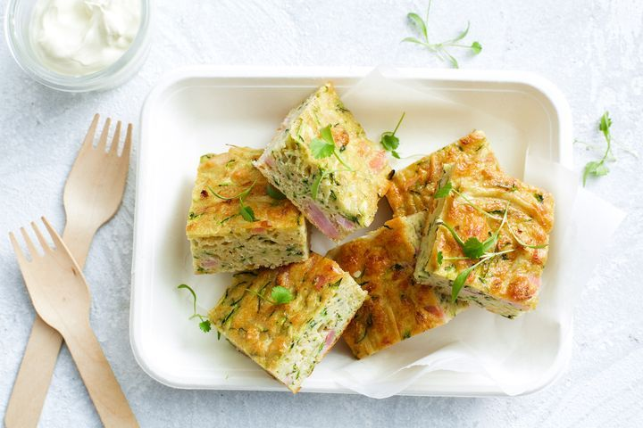

These 3 easy recipes are easy to make when you're in a hurry.
The humble zucchini slice is by far the most popular recipie.
Everyone loves a quick and easy fried rice, perfect for a weeknight meal.
You can't go past a classic shephard's pie for a satisfying Sunday lunch